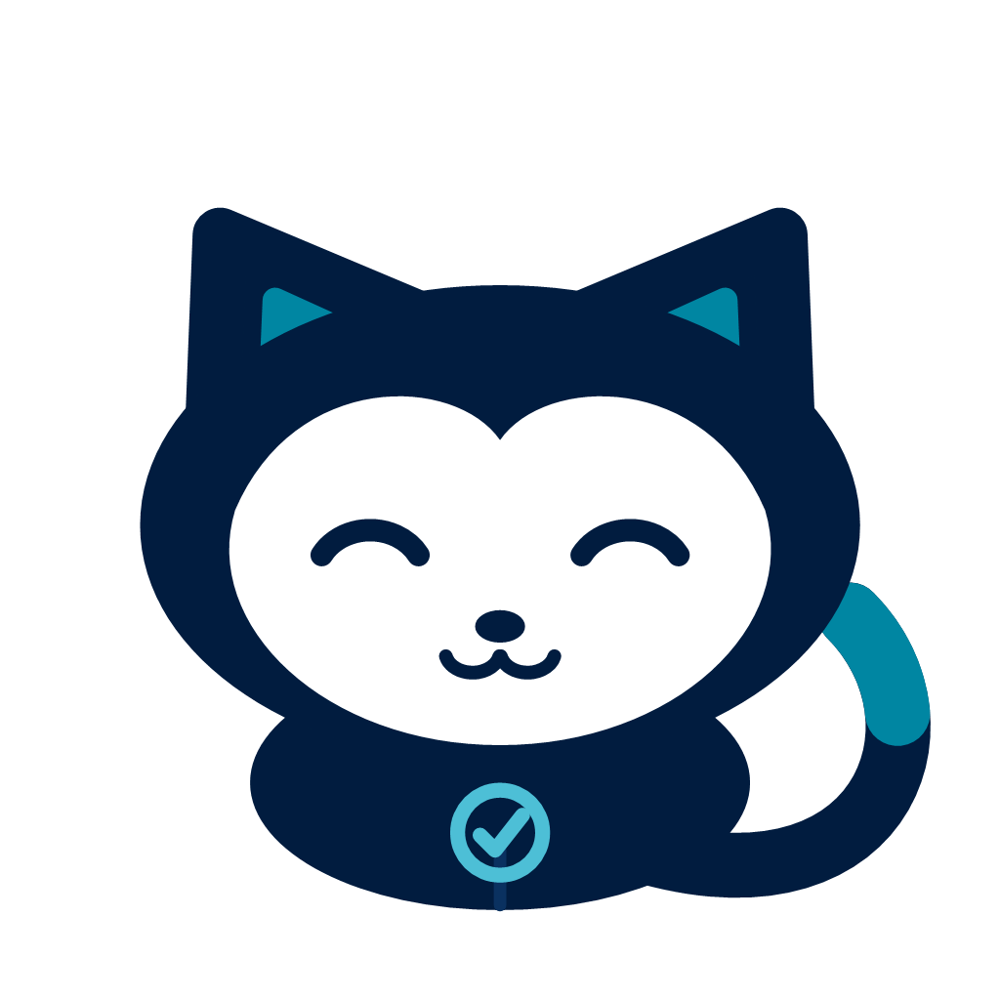

Tu teléfono, como la webcam de tu PC.
Gratis para Windows 11. El video va de tu teléfono a tu computador por tu red Wi‑Fi, cifrado y sin pasar por internet.
Descargar para WindowsVersión 0.4.0 alpha · Windows 11 (64 bits)

Instalar en tres pasos
1
Instala la app del teléfono
Busca «Numora Webcam» en Google Play.
2
Instala este programa
Ábrelo y acepta el permiso de administrador, que se pide una sola vez para registrar la cámara.
3
Escanea el código
En el teléfono pulsa «Escanear» y apunta al código del PC. Aparece como cámara en Zoom, Teams, OBS y el navegador.
Si Windows dice «Windows protegió su PC»
Esta versión aún no tiene firma digital y por eso SmartScreen avisa; es normal. Pulsa Más información y luego Ejecutar de todas formas.
Lo importante
PrivadoNada se graba ni se envía a servidores de Numora.
CifradoAES‑256 entre tu teléfono y tu PC.
Sin cuentaNo hay registro, anuncios ni rastreadores.